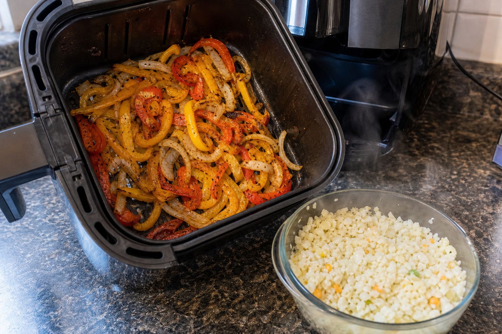
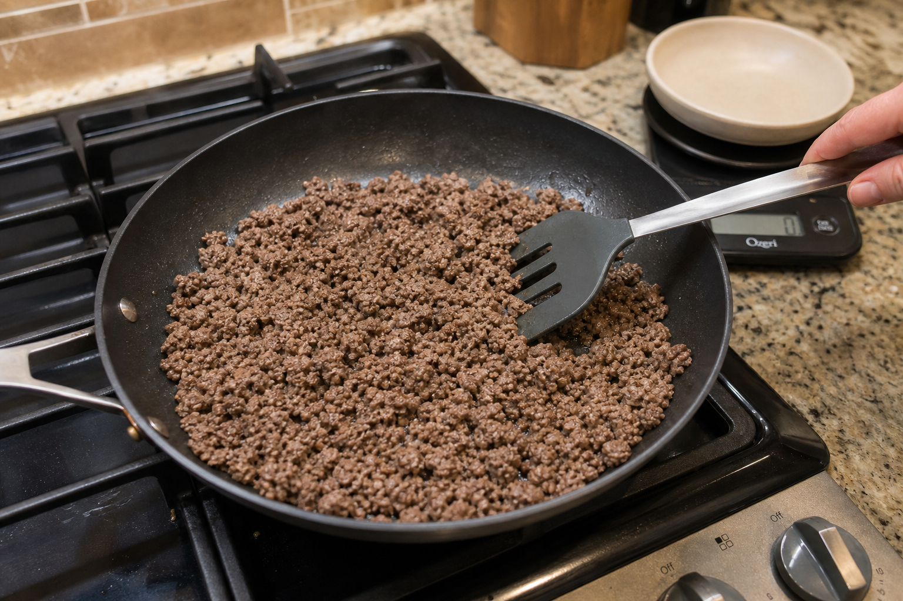
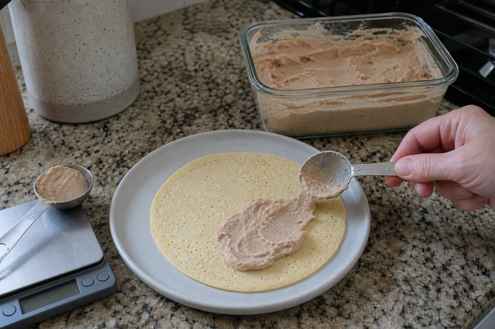
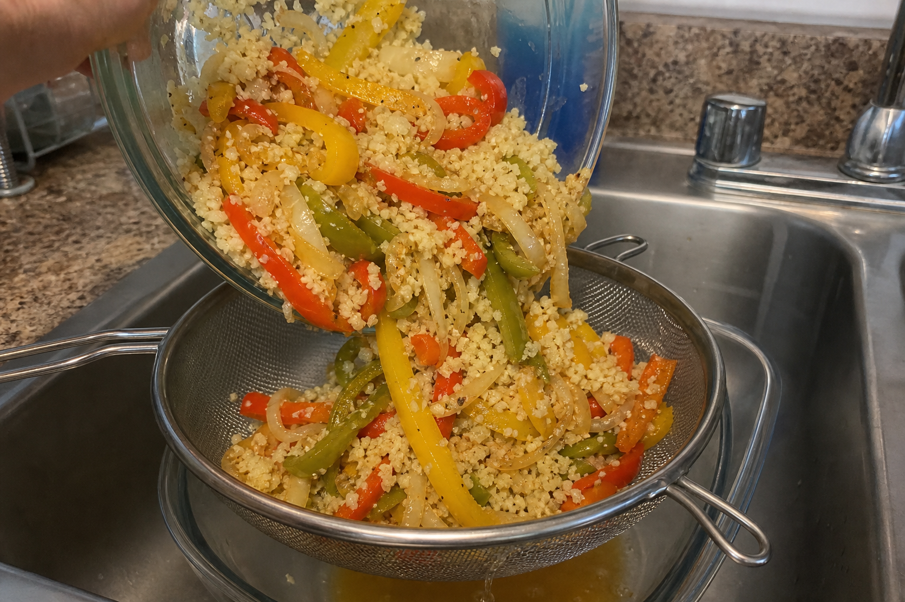
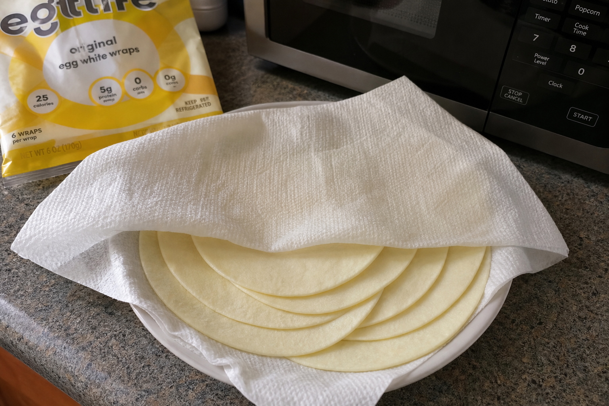

6 tacosaround 800 calorieshigh proteinprotein toggle
High-Protein Massive Taco Night
A big, high-volume taco plate using Egglife wraps, seasoned vegetables, cauliflower rice, bean dip, and a protein option that keeps the full meal around 800 calories. Use the toggle below and the nutrition, ingredient list, cooking step, assembly step, and protein images update to match.
Steps
1. Cook the peppers, onions, and cauliflower rice
Slice the 250 g bell pepper and 200 g onion. Season with garlic salt, garlic powder, and black pepper. Air fry at 390-400°F until softened and lightly charred, about 18-25 minutes, shaking or stirring once or twice.
While the peppers and onions cook, microwave the 250 g cauliflower medley or cauliflower rice until hot.

2. Cook the Ground beef
For 93% ground beef, cook until browned and fully cooked through. Use about 170 g cooked or portioned meat for the tacos.

3. Measure the bean dip
Measure the bean dip amount for this meal: 7 logged servings / 122 calories total. Use only that measured portion for the tacos. If you made a larger batch of dip, save the rest.

4. Combine and drain the vegetable base
Combine the cooked peppers, onions, and cauliflower rice. Drain off excess liquid so the tacos do not get soggy. Taste and adjust seasoning with a little more garlic salt, garlic powder, or black pepper if needed.

5. Warm the wraps
Warm the 6 Egglife wraps so they are flexible. You can warm them over the lid of the hot container, in a dry pan for a few seconds, or in the microwave under a damp paper towel for 15-30 seconds.

6. Assemble the tacos
Spread the measured bean dip across the wraps. Add the vegetable base, then divide the browned ground beef evenly across all 6 tacos. Roll or fold the wraps and eat while warm.